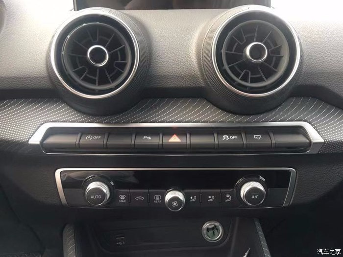

二度看车，全新Q2L--遇见不一样的自己
汽车之家 2018-11-09上次看见Q2L之后，心心念念的还想在看一遍，过了10多天了，才有时间过来看看，很可惜的是这次只有自己有空，我那惦记着Q2L(美女销售)的室友还要加班哈哈哈哈
不过他没来可影响了我看车的好心情，毕竟我是个实打实重色轻友的男人，十种颜色的Q2L已经足以让我抛弃他了。
从我家到这家店距离不算远，不到20分钟我就来到了让我心心念念的Q2L面前，还是在那个位置，还是那个站位，一进门最亮眼的依旧是它，上次在论坛里放自己拍的照片之后，收到网友的评论，还感觉有点对不起这车呢，跟官网的图对比，我确实糟蹋了这车身的颜色，官网的图反而更能反映我自己看到的那种惊喜的绿。
吸取各位同仁的意见，我今天又来到了这里，年轻人嘛？总能因为别人的嫌弃就去放弃自己的喜爱的吧？
相比直接放弃，不如再试一次，为自己的喜欢正名，也为这Q2L正名，还它应有的色彩，一次不行就两次，两次不行就三次，好像有点跑偏了哈哈哈哈
说回这里，今天挺幸运的，迎接的我的还是那个总是带着笑容的美女销售顾问，我那小心眼的室友都以为我叛变了，根本就不是过来看车的，只是为了过来撩美女的，虽然我义正言辞的反驳了他，但是一个美女坐旁边介绍还是会比一个人比自己帅的男人来的好多了！
不得不说，还是有遗憾的，车牌没还是没办好，出门试驾是不可能的了，但是这美女还是很好的，虽然不能出去试驾，还是愿意带我在公司周围转转的，也算是弥补了一丝丝我的遗憾。
这次过来，一是为了补充一下一些没拍到的细节，二是为了出门试驾，出门试驾是机会了，但是也不能白来，最起码这次是拿到了美女的微信，大家可别误解啊，我是为了试驾，真的！！！
好了好了，废话有点多了，还是上图吧！

顺序不能乱，先来张正脸的

侧脸的
他说我右脸比较好看
侧面在我看来有种年轻的冲劲
原来那个地方背光，我还特地换了一处地
回来才发现有点歪了哈哈哈哈
鲨鱼鳍
用了很多线条，让整个车看起来更加有进取的动感

灯厂的灯，不多说了，大家都懂~
不知道怎么描述，反正觉的很帅
双排气，不说其他的，看起来就酷啊
发动机舱
有很多人会觉得Q2L的空间有点小，但是你真正坐上去的时候会发现刚好，很够用
这抬头显示真的酷毙了，第一次来我都没看见~
座椅上的内饰条，感觉就让这车鲜活了很多
这可以自己选的灯光，真的是惊艳到我了，可惜当时不是晚上，不然一定会有更好的体验的
美女销售说，我订车就送直接送我，不用抽奖了，说的我真的心动了

中控台布置有一种对称的美感
虚拟座舱，也是十足的黑科技诶，特别是切换时的科技感，让人有一种操控的快感
整个车内空间采用了很多不同颜色的灯光，看着就让人高兴

这里显很整洁
打开之后发现了一个USB借口哈哈哈哈
后座扶手
打开之后是两个杯座
后排还有一个12V的电源借口，也是充分考虑到了现在年轻人的需求了
橙色的安全带卡扣

这绿色的缝线也很讨我喜欢
后备空间算不很大，但是支持全排放倒，满足你的需求是足够的
最后还是以一个大鹏展翅来结束这次分享，跟美女销售约好了，平衡车还是给我留着（走的时候那美女销售幽怨的小眼神哈哈哈哈哈哈）